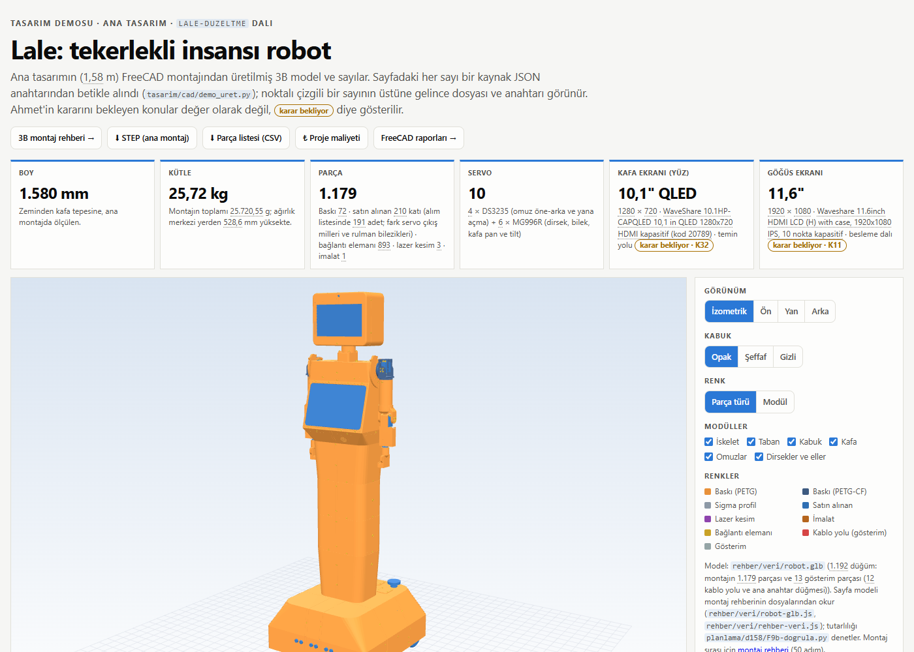
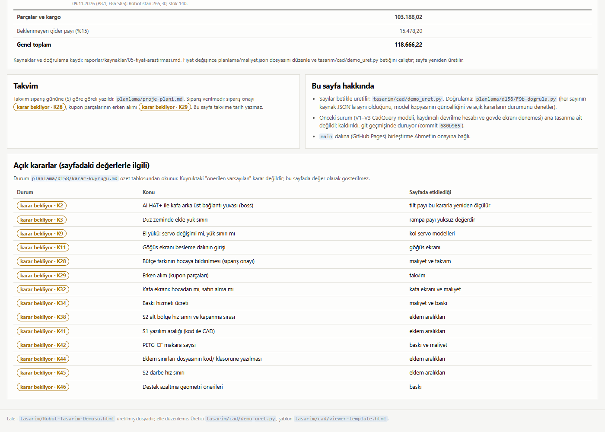

Lale F9b: demo sayfası 1,58 m sayılarıyla (P9.2)
Ajan C (ölçüm ve kayıt) · 09.11.2026 · dal lale-duzeltme · kaynaklar: F9b-brief.md, F9b-gunluk.md (§10 düzeltme turu 1 dahil), F9b-kontrol.md (yeniden kontrol, düzeltme 1: GEÇER), F9b-dogrula.py çıktısı
F9b-dogrula.py "GECER (hata 0)": 127 anahtar, 130 bağlı eleman; DOM 1.638 bağlı, 0 bağsızfile://, 1400 ve 360 px; model çizildi (data-hazir=1); 360 px taşma 0maliyet.json ile aynı (153 kalem)C'nin koşuları F7b commit'i (649885f) ve raporu (2d1f412) push edildikten sonra yapıldı (18:41–18:44, PYTHONIOENCODING=utf-8, py -3 -B; FreeCAD açılmadı, kilit "boş"). Sıra B'nin O-3 kuralına uygun: önce F7b'nin rehber/veri/ dosyaları commit'lendi, sonra demo_uret.py ve F9b-dogrula.py bu son hâlle koşuldu. Koşudan sonra headless Chrome süreci 0. Takma ad araması, ad hiçbir yere yazılmadan, git geçmişinden çalışma anında türetilerek yapıldı.
Yeniden üretim (F7b'nin son rehber-veri.js'iyle)
| Adım | Sonuç |
|---|---|
py -3 tasarim/cad/demo_uret.py | Çıkış 0: "model: goreli ../rehber/veri/rehber-veri.js, ../rehber/veri/robot-glb.js · 1192 dugum; sayi anahtari: 127 · karar: 14 · maliyet: 153 kalem; demo 163 KB". Yazılan tek dosya sayfa (find -newer); lale158-model.js üretilmedi. |
| Sayfa baytları | Değişti: sha256 9613ce541bb3 (B'nin onayladığı hâl, F7b 17:54 verisiyle) → 6301edf7452a. Fark tek satır: gömülü <script id="kaynak"> JSON'unda yalnız dosyalar["rehber/veri/rehber-veri.json"] parmak izi 2c512b2b95c1 → 4b35d3edf72c (commit'lenen F7b dosyasının sha256'sı). Bu bir kaynak dosya özeti; sayfada sayı olarak gösterilmiyor. |
| Sayılar, model ve parça adları | Değişmedi. Gömülü JSON anahtar anahtar karşılaştırıldı: başka fark 0; glb_dugum, glb_ref, glb_kablo, rehber_adim ve 127 anahtarın hepsi aynı. Bu yüzden commit atıldı. |
| Görüntüler | --goruntu koşulmadı; 10 PNG B'nin onayladığı hâliyle kaldı. Görünen içerik değişmediği için sayfayı temsil ediyorlar. |
Kabul ölçütleri (C'nin ölçümleri)
| Ölçüt | Ölçülen | Kaynak | Durum |
|---|---|---|---|
Sayfa yerelde (file://) açılıyor, konsol hatası 0 | 1400 px ve 360 px: konsol 0, data-hata='', data-hazir=1 (model göreli dosyalardan çizildi) | F9b-dogrula.py [8], C 18:42 | GEÇER |
F9b-dogrula.py 0, her sayı bir JSON anahtarına bağlı | çıkış 0; [1] 127 anahtar / 130 eleman; [2] statik 119 bağlı, 5 muaf (pay seçenekleri), 0 bağsız; [8] DOM data-k 131, data-mk 978, 1.638 bağlı, 0 bağsız | F9b-dogrula.py (-X utf8, çıktı dosyaya) | GEÇER |
| Model: göreli dosyalar o anki hâlleriyle tutarlı | robot-glb.js GLB 2.559.336 bayt = robot.glb (sha256 760bf1ff5955); rehber-veri.js = .json, 1.192 parça; 1.192 GLB düğümünün hepsi parcalar'da | [4] | GEÇER |
| Maliyet | gömülü JSON = planlama/maliyet.json (153 kalem); sayfa kuralı 121 kalem, ara 103.188,02, genel 118.666,22 TL | [3] | GEÇER |
| Açık kararlar "karar bekliyor" | 14 karar, 33 etiket, hepsi kuyrukta açık (K2, K3, K9, K11, K28, K29, K32, K34, K38, K41, K42, K44, K45, K46) | [5] | GEÇER |
| Kafa QLED 10,1", 10 servo, göğüs 11,6", boy 1,58 m | servo 10 = 4 DS3235 + 6 MG996R; brief sayıları kaynakla aynı: boy 1580, rampa 1,519, tilt 3,64, pan 2,21, mik–hoparlör 574,3; eklem sınırları kod/ ile aynı | [6] | GEÇER |
| Eski 1,65 kalmamış, kalanların gerekçesi var | 23 eşleşme (sayfa 12 + DOM 11), hepsi dokunulmaz maliyet.json metni ve "eski tasarım notu" etiketli; şablon ve üreticide 0 | [7]; günlük §5 | GEÇER |
| 360 px yatay kaydırma yok | innerWidth 360 = scrollWidth 360 = clientWidth 360 | [8] | GEÇER |
carpisma_kos.py kontrol | çıkış 0 (18:43, commit öncesi ve commit sonrası) | C | GEÇER |
regresyon.py --yazma | çıkış 0, "GEÇER (hepsi okundu, kötüleşen yok)", 10 / 10 aynı (değerler F7b raporundaki tabloyla aynı) | C, 18:43 | GEÇER |
| Takma ad | commit'in 18 dosyasında 0 (sayfanın görünen metni ve gömülü JSON'ları, PNG metin parçaları dahil); staged içerikte 0. Ahmet'in kendi tam adı yalnız brief'in kişi atıf kuralında geçiyor; başka öğrenci / danışman soyadı 0 | C, çalışma anında türetilen ad | GEÇER |
| Yerel kullanıcı yolu | 0. Desen eşleşmelerinin hepsi tarayıcı penceresi genişliğini anlatan cümleler (günlük, kontrol, doğrulama betiği); yol değil | C, 18 dosya + staged içerik | GEÇER |
| Commit sonrası | F9b-dogrula.py --tarayicisiz 0; carpisma_kos.py kontrol 0 | C (B'nin notu) | GEÇER |
Envanter özeti (eski → yeni)
Önceki sayfa (son içerik değişikliği 680b965, 30.10) eski CadQuery modelini (V1 / V2 / V3) ve 1,65 m gövde ekranı denemesini gösteriyordu: metinde 232 ham sayı, gömülü 54 parçalık model ve 29.10 tarihli maliyet JSON'u. Hiçbiri aynen kalmadı; yeni sayfada her sayı bir JSON anahtarından (data-k) ya da maliyet.json'dan (data-mk) geliyor.
| Konu | Eski sayfa | Yeni sayfa | Kaynak anahtarı |
|---|---|---|---|
| Boy | 125 cm (V3; V1 115) | 1.580 mm | lale158-kontrol.json toplam_boy_mm |
| Kütle | 18,57 kg (V3; V1 17,75, V2 18,90) | 25,72 kg (25.720,55 g) | montaj-analiz.json kutle_g |
| Ağırlık merkezi yüksekliği | 337 mm | 528,6 mm | montaj-analiz.json agirlik_merkezi.1 |
| Parça | 54 CadQuery parçası | 1.179 (baskı 72, satın 210 katı / alım listesinde 191, bağlantı 893, lazer 3, imalat 1) | montaj-analiz.json parca_sayisi, parcalar[tur=…]#say, bom_ozet.Satin.adet |
| Servo | DS3218 / MG996R / STS3215 seçici | 10 = 4 DS3235 + 6 MG996R | F6a-eklem_sinirlari-oneri.json, montaj-analiz.json |
| Kafa ekranı | 7" (V1 / V3), iki GC9A01 göz (V2) | 10,1" QLED 1280 × 720 | montaj-analiz.json parcalar[ad=Yuz ekrani …] |
| Göğüs ekranı | 10,1" (V3'te 15° eğik) | 11,6" 1920 × 1080 | montaj-analiz.json parcalar[ad=Gogus ekrani …] |
| Devrilme / motor / servo kartları | kaydırıcılı hesap (V3 modelinden) | rampa payı 1,519 (≥ 1,5); tilt 3,64, pan 2,21; teker ivme sınırları | regresyon-son-kosu.json, F6a-…oneri.json teker |
| Eklem aralıkları | yok | S1 −45…135, S2 5…120, dirsek 0…105, bilek −90…90, pan −90…90, tilt −13…13 | F6a-…oneri.json eklemler.* |
| Baskı | okul yazıcısı 25 cm, PETG 2,5 mm | X2D 246 × 246 × 250 mm; 72 parça; 7.668,9–7.726,7 g; 159,90–161,08 sa | baski-analiz.json, Y2b-baski.json |
| Maliyet genel toplam | 103.767,58 TL (29.10, 119 kalem) | 118.666,22 TL (09.11, 121 kalem) | planlama/maliyet.json |
| Takvim | "2 Ekim 2026", yapım adımları | tarih yazılmaz; S ↔ K28 / K29 "karar bekliyor"; montaj rehberi (50 adım) bağlantısı | proje-plani.md, rehber-veri.json adimlar#say |
| Gövde ekranı denemesi (1,65 m), kaydırıcılar, V1→V3 listesi, vida payı | vardı | kaldırıldı (git geçmişinde: 680b965, c7f9af4) | — |
| Açık kararlar | yok | 14 karar "karar bekliyor" | karar-kuyrugu.md özet tablosu |
Tam envanter (29 satır) F9b-gunluk.md §1'de; sayım F9b-envanter.py.
Düzeltme turu 1
| # | Bulgu (B) | Yapılan | Yeniden kontrol |
|---|---|---|---|
| O-1 | Maliyet tablosunda işaretsiz eski kafa ekranı ve Nextion / 7" iddiaları; kalem 33 "Waveshare 10.1" HDMI LCD (B)" KPI kartındaki QLED ile çelişiyor | Sayfa katmanında işaret (maliyet.json'a dokunulmadı): kalem 33'ün altına "F9b notu: K32'ye bağlı; CAD'deki kafa ekranı QLED 10,1"" (10,1 kafa_in anahtarından data-k); kalem 36 ve 78'in Nextion notlarına "eski tasarım notu". Üretici kalem adını ve aranan metni denetler, maliyet.json kayarsa üretim durur; doğrulama DOM'da üç işareti arar. | kapandı |
| O-2 | "Satın alınan 210", alım listesindeki 191 ile uyuşmuyor | Parça kartı: "satın alınan 210 katı (alım listesinde 191 adet; fark servo çıkış milleri ve rulman bilezikleri)". 191 yeni p_satin_bom ← bom_ozet.Satin.adet. Fark 19 katı: 10 servo çıkış mili + 9 rulman bileziği; adları "(" ile başladığı için alım listesine yazılmıyor. 210, kırılım 1.179'a tutsun diye kaldı. | kapandı |
| KT-F9b-2 = b | O-3: model kopyası (lale158-model.js, 3,4 MB) F7b'nin commit'lenmemiş verisine bağlı | Orkestratör kararı b: kopya kaldırıldı; sayfa ../rehber/veri/rehber-veri.js ve robot-glb.js'i <script> ile göreli yükler (file://'da çalışır). Doğrulama [4] dosyaların o anki hâlini okur, sabit sha yok. | kapandı (sıra kuralı bu commit'te uygulandı) |
| D-2 … D-7 | "13 kablo yolu" ifadesi, brief listede yok, silme çelişkisi, kapsam dışı eski tarifler, yönlendirmede çökme, iki "K3" | "13 gösterim parçası (12 kablo yolu ve ana anahtar düğmesi)" (glb_kablo anahtarı); brief listede; günlük 3. satır; KT-F9b-3 / 4 genişletildi; stdout.reconfigure | kapandı |
| D-1 | Doğrulama betiğinin dört açığı | Brief sayıları artık hata; eski / duzeltme muafiyeti kapandı | kısmen (kalanı D-9) |
B'nin yeniden kontrolünde 16 bozmanın 12'si yakalandı; geçen 4'ü D-9. Bu turda dosya silinmedi.

data-k bağlı), "karar bekliyor · K32 / K11" etiketleri, rehber GLB'sinden çizilen 1,58 m model.
main'e birleştirme Ahmet'in onayına bağlı.Karar taslakları (yalnız öneri)
| # | Konu | Öneri / durum |
|---|---|---|
| KT-F9b-1 | main'e birleştirme (GitHub Pages; kök index.html bu sayfaya yönlendiriyor) | Ahmet'in onayına bağlı. Seçenekler: (a) onaydan sonra birleştir; (b) P9.3 sonuç raporuyla birlikte. Önerilen b. Bu pakette birleştirme yapılmadı. |
| KT-F9b-2 | Model kopyası depoya girsin mi | Karar verildi: b (orkestratör). Göreli bağlantı; tasarim/cad/lale158-model.js commit dışı. |
| KT-F9b-3 | maliyet.json eski metinleri (iş) | notlar[0] "Demodaki 3B model eski CadQuery V3 (125 cm)"; 1,65 m ölçülerine dayanan 8 kalem notu (5, 8, 14, 19, 33, 92, 107, 139); kalem 33 / 36 / 78 (kafa ekranı LCD, Nextion); K numaralama çakışması (maliyet.json K3'ü akü için kullanıyor, kuyrukta K3 "düz zeminde elde yük sınırı"). maliyet.json sahibi gözden geçirsin; sonra demo_uret.py koşulur. |
| KT-F9b-4 | Eski demo tarifi (iş) | Depodaki CLAUDE.md 12–13. satırlar, README.md:21, planlama/proje-plani.md:235: demo artık 1,58 m FreeCAD montajını rehber dosyalarından gösteriyor, sayıları demo_uret.py kaynak JSON'lardan alıyor. Üçü birlikte güncellenmeli (CLAUDE.md'deki K25 ile birlikte). |
Açıklar
- D-8 Sayfa depo dışında (yalnız HTML, başka klasörde) açılınca model yüklenmez:
data-hazir="model-yok", konsolda 3 hata. Yedek metin nedeni yanlış söylüyor ("three.js için internet bağlantısı ve WebGL gerekiyor"). Göreli yol depo yapısına bağlı (tasarim/ilerehber/yan yana). Depo içifile://ve GitHub Pages sorunsuz; kabul ölçütü sağlanıyor. Öneri:model-yokiçin ayrı metin ("sayfa depo içinden açılmalı") ve model notuna aynı cümle. - D-9 Doğrulamanın kalan açıkları (bugünkü sayfada bunlardan yararlanan sayı yok): harfe bitişik sayı ("1590mm"),
titleözniteliği,data-ui="secim"muafiyeti, anahtarın başka bir JSON yoluna bağlanması (p_satin_bom→Baski.adet). Öneri:secim'i yalnız#info'ya sınırla;p_satin − p_satin_bom= "(" kodlu katı sayısı denetimi. - C gözlemi "Bu sayfa hakkında" maddesi hâlâ doğrulamanın "model kopyasının güncelliğini" denetlediğini söylüyor (şablonda da aynı). KT-F9b-2 = b'den sonra kopya yok; doğrulama göreli dosyaların tutarlılığını denetliyor. Sayı değil, metin; P9.3'te şablonda düzeltilebilir.
- artık dosya
tasarim/cad/lale158-model.js(3,4 MB, ilk turdan) takip dışı; sayfa ve doğrulama kullanmıyor. Silinmedi, dokunulmadı; silme ya da.gitignorekararı Ahmet'in. - çevrimdışı 3B görünüm three.js r128'i CDN'den yükler; internetsiz açılışta model görünmez (sayılar ve maliyet görünür).
- kaynak Maliyet toplamı açık kararlara bağlı (K28, K32, K34, K42); sayfa bunu yazıyor. Tilt payı etiketi "±15" kaynaktaki gibi, eklem aralığı ±13 (pay tutucu tarafta hesaplanmış). Eski kaydırıcılı devrilme / motor / servo hesabı 1,58 m için yeniden kurulmadı (kaynak JSON'larda karşılığı yok).
Kayıt
| Commit | Konu | Dosya |
|---|---|---|
a3fbcd6 | tasarim/Robot-Tasarim-Demosu.html, tasarim/cad/demo_uret.py, tasarim/cad/viewer-template.html (değişen); F9b-brief.md, F9b-gunluk.md, F9b-kontrol.md, F9b-dogrula.py, F9b-envanter.py, 10 × F9b-goruntu-*.png (6 × 1400 px, 4 × 360 px) (yeni) | 18 |
Push: 2d1f412..a3fbcd6 lale-duzeltme → lale-duzeltme. B'nin kesin git add listesiyle; liste git status --porcelain -uall ile 18 / 18 eşleşti, F9b alanında liste dışı kalan tek yol tasarim/cad/lale158-model.js (artık, kasıtlı dışarıda). git diff --cached --stat: 18 dosya (15 yeni, 3 değişen), +2.478 / −1.539 satır; F7b, dongu-158.md ve kilit dosyası yok. Dışarıda kalanlar F7b raporundaki dışlama listesiyle aynı (F9b dosyaları artık içeride). main'e dokunulmadı. Bu rapor ayrı commit'te.